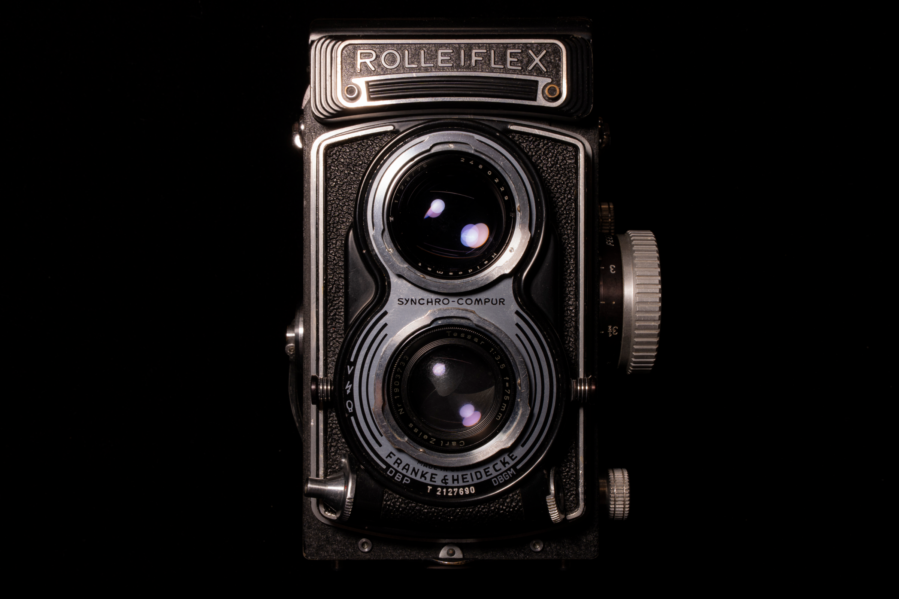

Medium Format
Fixed-lens medium-format cameras reviewed as complete photographic instruments, with attention to age, operation, and image-making.

Fixed-lens medium-format cameras reviewed as complete photographic instruments, with attention to age, operation, and image-making.